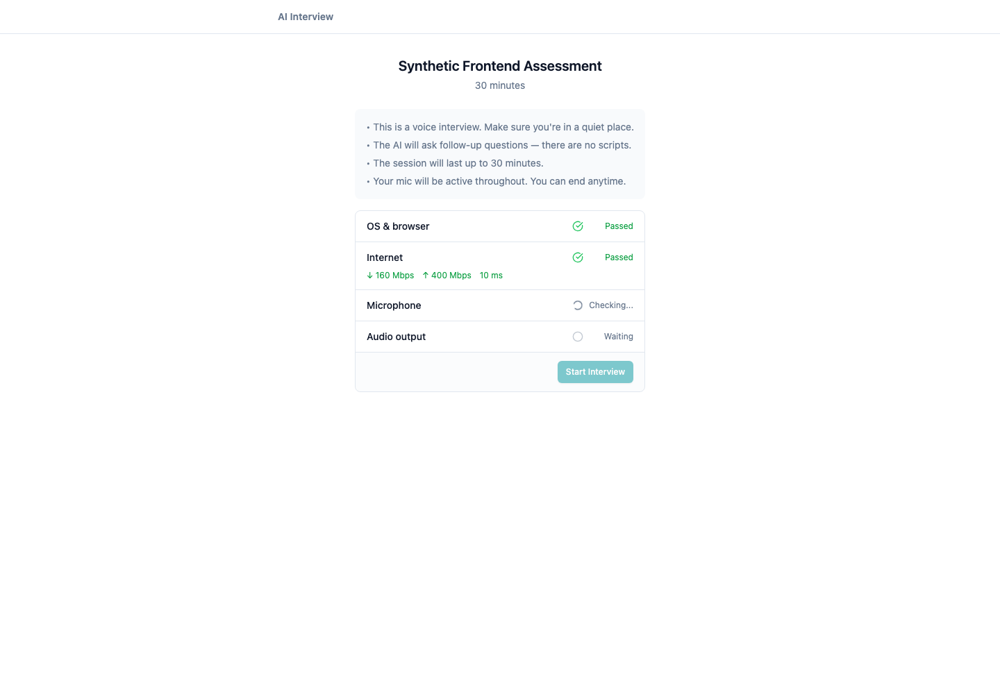
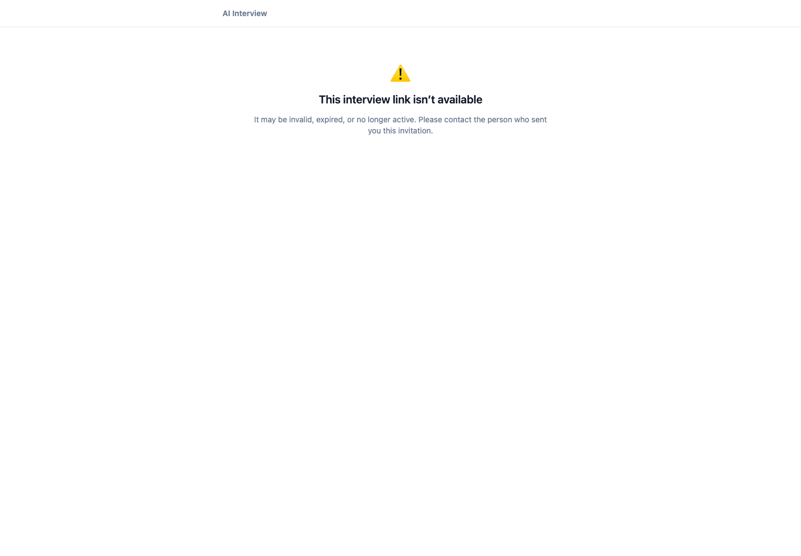

A focused full-stack revamp of the critical assessor-to-candidate handoff, designed around truthful failure states and a stable public URL contract.
The product lets an assessor define role-specific skills, invite a candidate to an AI-led audio interview, collect adaptive evidence, and then review a portfolio and fit/gap result. Its value is not merely generating questions: it must produce defensible hiring signal through the complete journey below.
assessor configures skills → candidate opens invite → interview and transcript → portfolio → hiring review
Assessors, recruiters, and hiring managers operate the product. Candidates are a first-class affected user because a system failure can prevent their participation in an employment decision. Candidate name, audio, transcript, and competency assessment are personal data. The design therefore minimizes the public metadata response and avoids exposing internal failures, consistent with the limited, specific, and secure processing principles in Indonesia’s UU No. 27 of 2022 on Personal Data Protection.
| Priority | Finding | Impact |
|---|---|---|
| P0 | invite_url used APP_BASE_URL, documented and deployed as the API origin. The public interview route exists on the SPA origin. | A valid recruiter invite can reach an API 404. The candidate cannot begin; no evidence or portfolio is produced. |
| P1 | Any public metadata-load failure was rendered as “Interview Complete”. | An invalid or unavailable link could falsely tell a candidate their interview had been recorded. |
| P2 | No working backend test harness, no frontend test runner, and setup documentation drift. | Candidate-critical regressions have little automated protection. |
| Signal | Default local multi-worker Puma accepted a health request but did not complete it. | Recorded for separate investigation; it was not silently bundled into this focused change. |
An assessor can successfully create an invitation, but the product hands the candidate an API-host URL instead of the web application URL. The interview cannot begin, so the assessment produces no hiring signal.
| Option | Decision | Reason |
|---|---|---|
Change only APP_BASE_URL | Rejected | Ambiguous configuration remains and candidate error handling remains false. |
Use explicit WEB_APP_BASE_URL, generate server-side URL, add truthful candidate states | Chosen | Fixes the contract across environments without changing the existing capability-token data model. |
| Serve SPA from Rails/API host | Rejected | Broad deployment, cache, security-header, and release-process change for a narrow defect. |
Session#invite_url derives from WEB_APP_BASE_URL and normalizes trailing slashes before appending /interview/:invite_token.WEB_APP_BASE_URL, never the API origin, and contain exactly one slash before interview.| Check | Result |
|---|---|
| RSpec public invite URL contract | 2 examples, 0 failures |
| Vitest candidate access-state mapping | 3 tests, 0 failures |
| Web production build | Passed: tsc && vite build |
| Manual synthetic integration | Existing session returned localhost:5173/interview/…; SPA route returned HTTP 200; public metadata remained minimal. |


The dedicated scratch branch scratch/seeded-invite-url-fault provides regression evidence without contaminating the feature branch. Commit f401e21 deliberately reverted URL generation to the API origin; the URL spec failed on origin and path assertions. Commit 7274bc6 reverted that seeded defect.
An early AI-proposed assertion rejected the substring //interview anywhere in a full URL. It was invalid because every legitimate https:// URL contains //. I checked the URL grammar and corrected the test to parse the URI and assert its path. This verification step is reflected in the final model spec.
WEB_APP_BASE_URL to the public SPA origin. An environment-level smoke test should create an invite and follow the resulting URL after every deployment.Use the 3–5 minute demo to show (1) the critical handoff and P0 impact, (2) the explicit web-origin contract in Session#invite_url, (3) the valid readiness and unavailable recovery screens, and (4) the RSpec, Vitest, and seeded-fault evidence. A recording script is included in assessment/DEMO_SCRIPT.md.
Prepared from local repository evidence and synthetic development data. No real candidate personal data, production credentials, or model key is included.